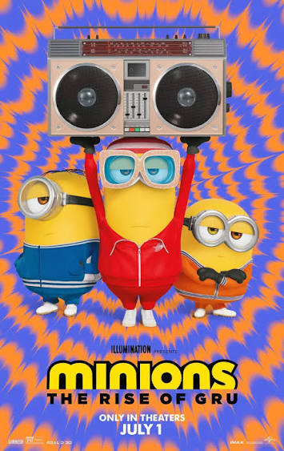
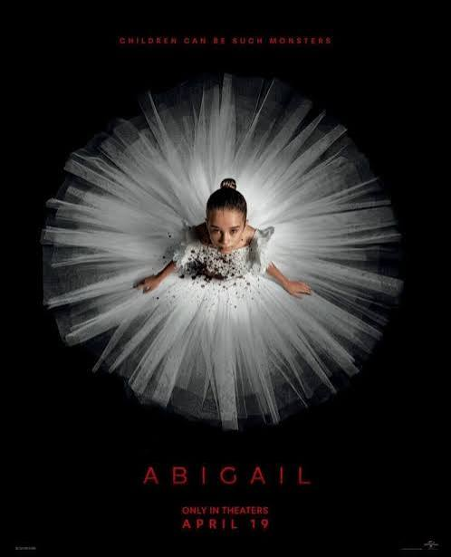
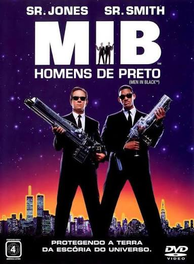
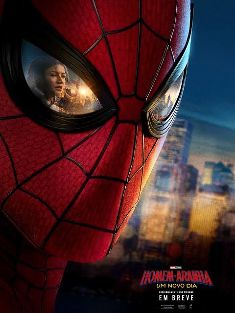
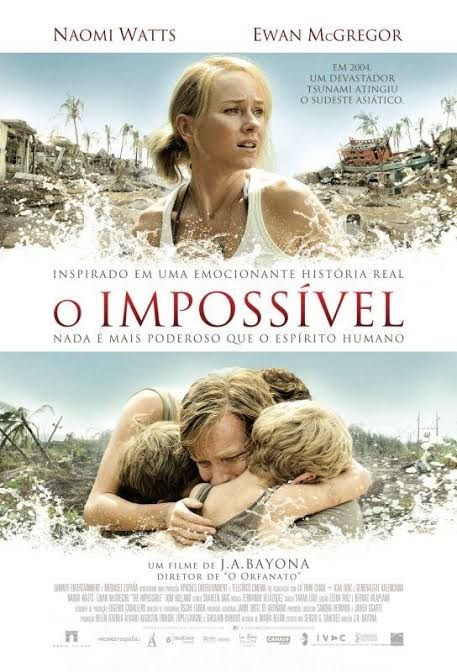
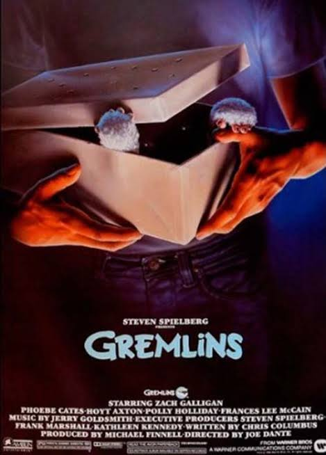
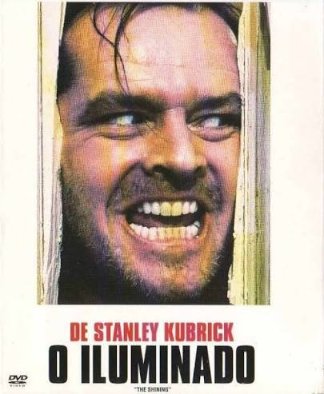

Minions 2: A Origem de Gru
SINOPSENos anos 1970, o jovem Gru sonha em se tornar um grande vilão. Com a ajuda dos Minions, ele tenta conquistar seu espaço no mundo do crime, mas acaba enfrentando desafios e aventuras inesperadas.
Conheça as histórias por trás de cada filme!

Nos anos 1970, o jovem Gru sonha em se tornar um grande vilão. Com a ajuda dos Minions, ele tenta conquistar seu espaço no mundo do crime, mas acaba enfrentando desafios e aventuras inesperadas.

Um grupo de criminosos sequestra uma jovem bailarina e a mantém em uma mansão enquanto aguarda o pagamento de um resgate. Porém, acontecimentos assustadores revelam que a garota esconde um segredo perigoso.

Os agentes K e J trabalham em uma organização secreta responsável por controlar a presença de extraterrestres na Terra. Juntos, precisam impedir uma ameaça alienígena enquanto mantêm a existência desses seres longe do conhecimento da população.

Após ser esquecido pelas pessoas que ama, Peter Parker dedica sua vida à proteção de Nova York como Homem-Aranha. Enquanto enfrenta novos crimes e ameaças, ele precisa lidar com os desafios de viver sozinho e preservar sua identidade.

Durante as férias na Tailândia, uma família é surpreendida pelo tsunami de 2004. Separados pela tragédia, seus integrantes enfrentam grandes dificuldades enquanto procuram sobreviver e reencontrar uns aos outros.
Nascido em Feira de Santana, na Bahia, Divaldo Franco enfrenta dificuldades desde a infância por causa de sua mediunidade. Com o apoio da mãe, muda-se para Salvador, onde se aproxima do espiritismo e dedica sua vida à caridade, à educação e à ajuda ao próximo, tornando-se um importante líder espírita brasileiro.

Billy recebe de presente uma criatura adorável chamada Gizmo, que exige cuidados especiais. Quando algumas regras são desrespeitadas, criaturas travessas começam a provocar confusão e ameaçam a tranquilidade da cidade.

Jack Torrance aceita trabalhar como zelador de um hotel isolado durante o inverno. Ao se mudar para lá com sua esposa e seu filho, acontecimentos misteriosos começam a transformar a estadia da família em uma experiência assustadora.